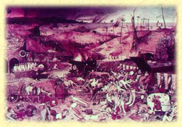

Etymological roots are indicated by the sign ç.
Language groups are as follows: SKT: Sanscrt; E: Egyptian; HB: Hebrew; GK:
Greek; L: Latin; AS: Anglo Saxon; ME: Middle English; OHG: Old High
German; G: German; OFR: Old French; FR: French; IT: Italian; ICL:
Icelandic; N: Nordic; SW: Swedish.
 L: pollen, pollis, palea, puluis = dust (pulverise, powder, pullulate); GK: pale = powder, fine flour, sifted meal; L: palea = straw, chaff; FR: paille; cf. pallet = straw mattress or couch (palliasse); SKT: palala = straw; GK: polios = grey (pale, pall, pallid, appal); palaios = old, long ago (paleography, paleology); pale, palaien = to wrestle; palaiestra = wrestling school; palin = back, again (palimpsest = scraped [phestos] again); GK: pula, pule = gate; poloros = gate keeper. See Agamben, G. The Coming Community: 67: "the notion of the 'outside' is expressed in many European languages by a word that means 'at the door' (fores in Latin is the door of the house, thyrathen in Greek literally means 'at the threshold'). The outside is not another space that resides beyond a determined space, but rather it is the passage, the exteriority that gives it access - in a word, it is its face, its eidos. The threshold is not, in this sense, another thing with respect to the limit; it is, so to speak, the experience of the limit itself, the experience of being-within an outside. This ek-stasis is the gift that singularity gathers from the empty hand of humanity." See Heidegger, M. Building dwelling thinking: 154 - "A boundary is not that at which something stops but, as the Greeks recognised, the boundary is that from which something begins its presencing".